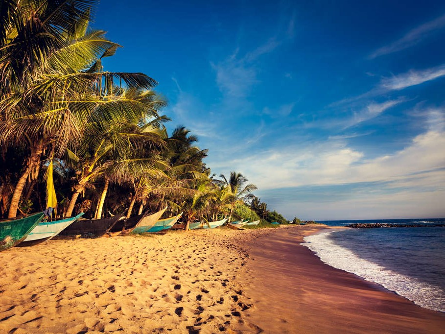
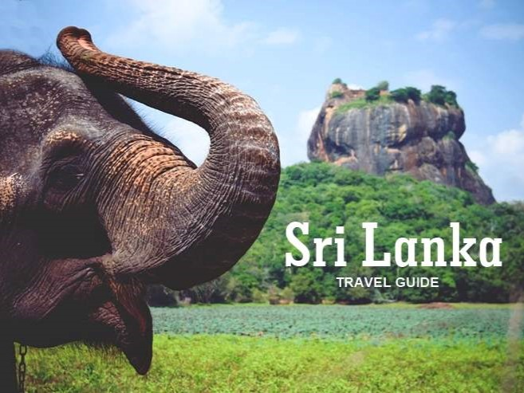
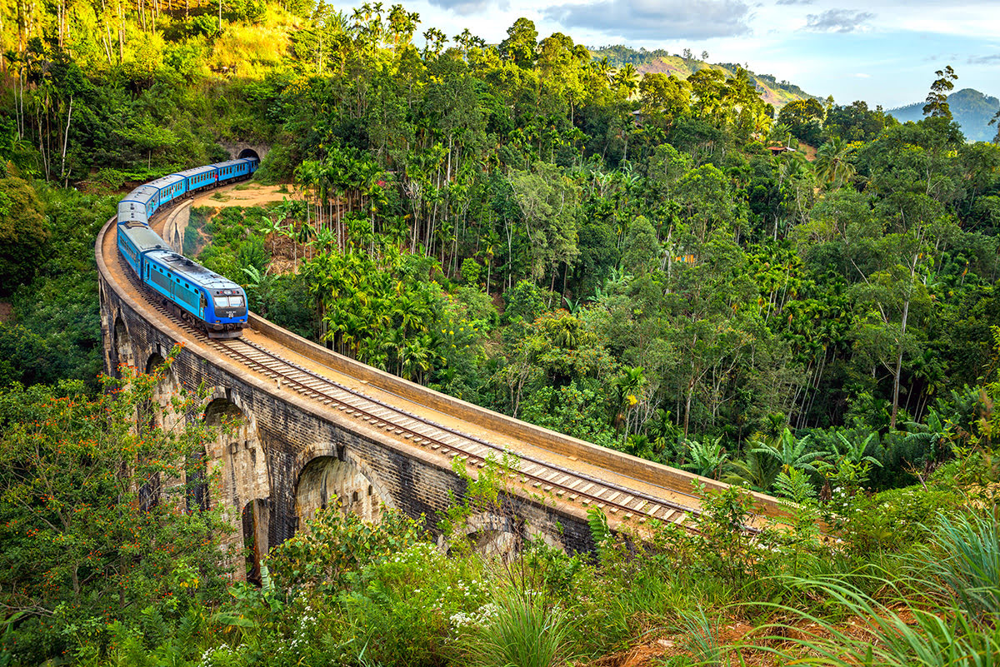

"Travel" is the movement of people between distant geographical locations. Travel can be done by foot, bicycle, automobile, train, boat, bus, airplane, ship or other means, with or without luggage, and can be one way or round trip. Travel can also include relatively short stays between successive movements, as in the case of tourism. wikipedia


Travel around the Sri Lanka
Obtain proper documentation. Your passport is your first step to getting around the world, but in addition to your passport, you may need to obtain a visa depending on the country you visit and how long you plan to be there. Visas must be applied for and have various application requirements.

Welcome to Paradaise
Welcome Holiday Travels provides a wide array of tour packages in Sri Lanka to suite your budget. Travel in Standard Deluxe or luxury with your own private .

Visit Sri Lanka
Sri Lanka, formerly known as Ceylon and officially the Democratic Socialist Republic of Sri Lanka, is an island country in South Asia. It lies in the Indian Ocean, southwest of the Bay of Bengal, and southeast of the Arabian Sea; it is separated from the Indian subcontinent by the Gulf of Mannar and the Palk Strait.
